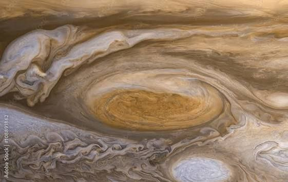
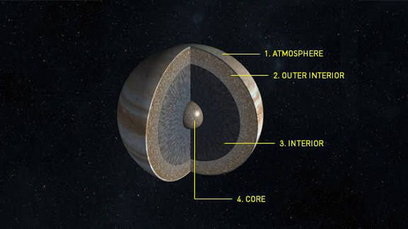

Jupiter
Largest planet; gas giant with Great Red Spot.

အရွယ်အစား
139,820 km
တစ်နေ့ကြာချိန်
9h 54m
အပူချိန်
≈ -145 °C
လများ
83+ Moon
Jupiter သည် Solar System ထဲတွင် အကြီးဆုံးဂြိုလ်ဖြစ်ပြီး Sun မှ ပဉ္စမမြောက်အကွာအဝေးရှိသော ဂြိုလ်ဖြစ်သည်။ Jupiter ၏ အရွယ်အစားသည် အလွန်ကြီးမားပြီး ဂြိုလ်အားလုံးကို ပေါင်းစည်းထားသကဲ့သို့ အလေးချိန်များစွာ ရှိသည်။ Jupiter သည် gas giant ဂြိုလ်ဖြစ်ပြီး အဓိကအားဖြင့် ဟိုက်ဒရိုဂျင်နှင့် ဟီလီယမ် ဓာတ်ငွေ့များဖြင့် ဖွဲ့စည်းထားသည်။ ထို့ကြောင့် Earth ကဲ့သို့ မျက်နှာပြင်မာကျောမှု မရှိပါ။ Jupiter ၏ ထင်ရှားသော လက္ခဏာတစ်ခုမှာ Great Red Spot ဖြစ်သည်။ ၎င်းသည် အလွန်ကြီးမားသော မုန်တိုင်းတစ်ခုဖြစ်ပြီး နှစ်ပေါင်းများစွာ ဆက်လက်ဖြစ်ပေါ်နေသည်။ Jupiter တွင် ဂြိုလ်တုများ အလွန်များပြီး 90 ကျော်ရှိသည်ဟု သိပ္ပံပညာရှင်များ ခန့်မှန်းကြသည်။ ထိုထဲတွင် အကြီးဆုံးဂြိုလ်တုများမှာ Io၊ Europa၊ Ganymede နှင့် Callisto တို့ဖြစ်ကြသည်။

Surface Details
Internal Structureထူးခြားချက်များ
Solar System အကြီးဆုံးဂြိုလ် Gas giant ဖြစ်ပြီး အဓိကအားဖြင့် hydrogen နှင့် helium ဖြင့် ဖွဲစည်းထားသည် Great Red Spot လို မုန်တိုင်းကြီးတစ်ခုရှိ ဂြိုလ်တုများ 90 ကျော်ရှိ (အကြီးဆုံး: Ganymede, Europa, Io, Callisto)